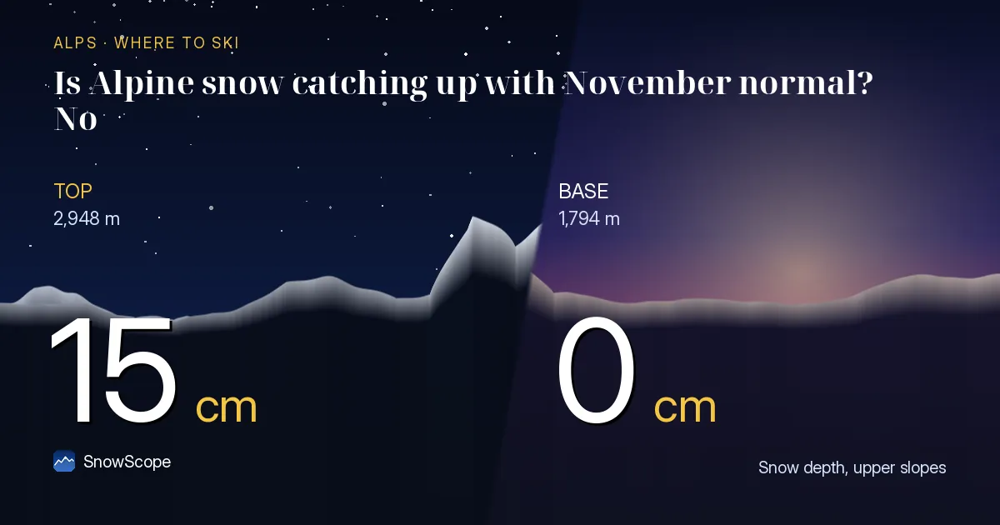
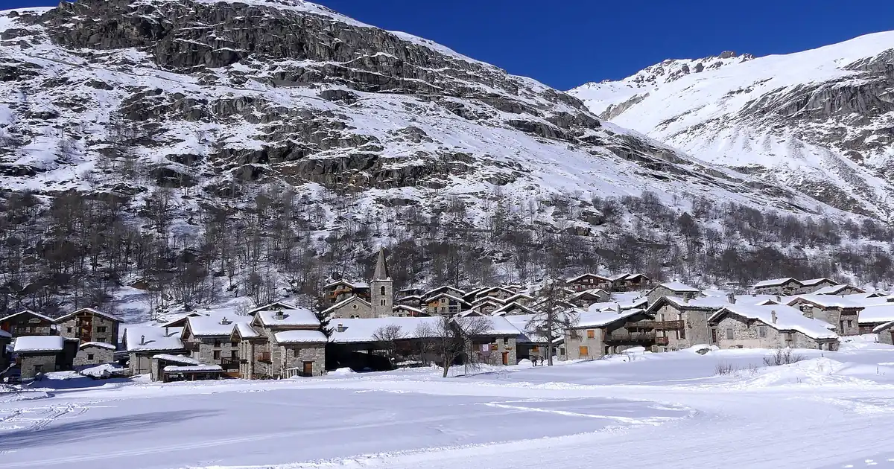
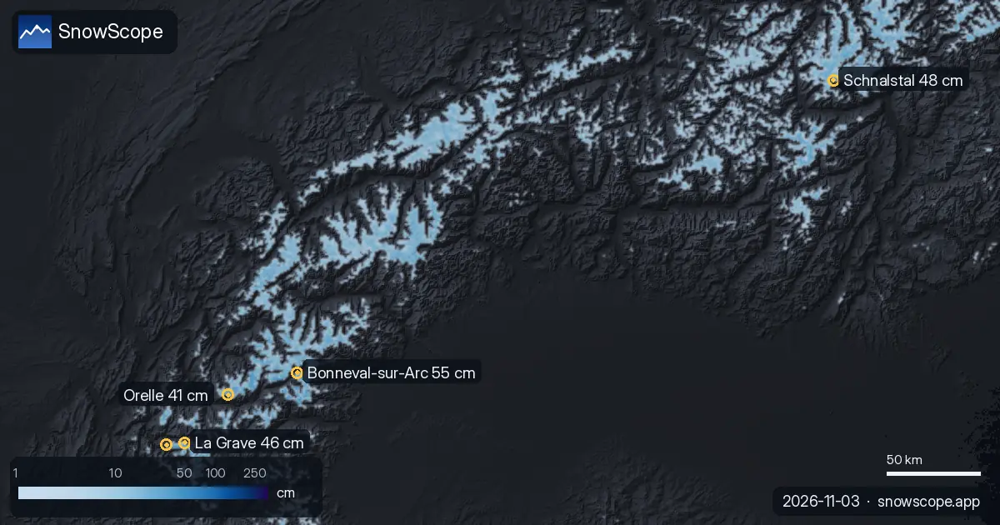

Is Alpine snow catching up with November normal? No: just 55 cm
The Alps are starting November with thin snow spread unevenly across the range. Bonneval-sur-Arc holds the deepest cover at 55 cm on upper slopes, but that sits well below the average for this date, and most of the region is running short of usable depth.
See the live snow forecast for Bonneval-sur-Arc in the SnowScope appSnow depth, powder alerts and the 3D map, free.
Where the depth sits
I look at the leading resorts, and Bonneval-sur-Arc takes the top spot with 55 cm on upper slopes. Schnalstal comes second at 48 cm. La Grave and Les Deux Alpes are tied at 46 cm each, with Orelle lower at 41 cm. These numbers sound reasonable for November, but the vertical distribution is the real story.
At La Grave, the depths are consistent: 31 cm at the mid-level (3369 m) and 24 cm at the base (3196 m). That is a solid snowpack building from top to bottom. At Bonneval, the picture changes fast: only 15 cm at the top (2948 m), and the mid-level (2371 m) has almost nothing in the model. The base at 1794 m is bare. So the 55 cm average is concentrated in a thin band high on the mountain, leaving lower slopes exposed.
| Resort | Snow depth | New snow, 72 h | Coming, next days | Top |
|---|---|---|---|---|
| Bonneval-sur-Arc | 55 cm | 4 cm | 14 cm | 2,948 m |
| Schnalstal | 48 cm | 2 cm | 1 cm | 3,200 m |
| La Grave | 46 cm | 1 cm | 28 cm | 3,543 m |
| Les Deux Alpes | 46 cm | 1 cm | 27 cm | 3,511 m |
| Orelle | 41 cm | 1 cm | 13 cm | 3,221 m |

Ground truth from weather stations
Weather stations confirm what the models show. Rosskar at 2680 m, right in the middle-altitude zone, measured 32 cm on November 2. Plattkopf at 2220 m measured 30 cm and picked up 8 cm in the previous 24 hours alone, suggesting wind was moving snow downhill. Even the low-elevation station at Pian Camuno (600 m) recorded 26 cm. These point measurements tell a clear story: snow is scattered and thin for early November.

The normal-year comparison
Here is the crux. At Bonneval's mid-level of 2371 m, the model shows 6 cm today. The average snow depth at that height on November 3, taken from past winters, is 10 cm. That is 60 percent of normal. At Schnalstal's mid-level of 2602 m, the measured 5 cm is close to its average. But La Grave breaks the pattern: its 31 cm at 3369 m already exceeds the average of 20 cm for this date.
This uneven pattern is typical of early-season setups. High-altitude storms dump at the peaks but skip the valleys and lower slopes. Only when you get a broader system do the mid and base elevations catch up to normal.
What the forecast brings
The forecast run from November 3 shows new snow arriving over the next three days. La Grave is forecast to gain 28 cm through November 6, with 20 cm of that concentrated on a single day (November 6). Les Deux Alpes should collect 27 cm. Bonneval will add 14 cm. Orelle will see 13 cm. This should push the mid-elevations into more typical November shape by November 6.
Schnalstal is an exception: only 1 cm forecast there through November 6. The storm system is expected to track south and miss the Austrian border zone, leaving Schnalstal thin for the next week.
Skiing now versus waiting
If you plan to ski in the next 24 to 48 hours, choose your terrain carefully. Stay at altitude. Bonneval's upper slopes at 2948 m offer the best depth right now. Schnalstal's high terrain at 3200 m has measurable cover. La Grave, with 31 cm at 3369 m and above, offers the most reliable base.
Lower slopes are problematic. At Bonneval, the mid-level (2371 m) and base (1794 m) are almost bare. At most resorts, low-elevation terrain will have rocks close to the surface. Early-season snow is often wind-hard and breakable. By November 6, the new snow will soften the surface and extend coverage to lower elevations, making the skiing safer and easier.
Monitoring the shift
Watch the forecast over the next three days. If the system tracks south as predicted, mid-elevations will gain 15 to 20 cm by November 6, bringing them closer to normal. Consult the official avalanche bulletin from Météo-France BERA before going off-piste, as new snow can create instability on steep slopes. The trend is clear: early November is thin across the Alps right now, but the picture improves quickly with the coming system.
Tips for skiers
- Stick to the highest slopes at Bonneval (2948 m), Schnalstal (3200 m), and La Grave (3369 m and above); snow is concentrated there at 31 to 55 cm.
- Avoid lower elevations and base areas today; rocks will be close to the surface. Wait until after November 6 when 20 to 28 cm of new snow arrives.
- Consult Météo-France BERA before going off-piste; new snow on November 6 will make avalanche risk worse on steep slopes.
- Early-season snow is often wind-hard and breakable; edge control matters more than in deep powder.
- By November 6, mid-elevations will gain 14 to 28 cm across the Alps; conditions will improve significantly then.
About these numbers
Resort snow depths are the deepest snow on the resort's upper slopes from the SnowScope snow model (about 1 km, run of 3 November); they are estimates for an area, not a measurement at one point. Station values are measurements on the date shown. Forecasts can change. Always read the official avalanche bulletin before going off-piste.
Official avalanche bulletins: Météo-France BERA
Cite this report
For research, teaching or the press: the numbers and charts are free to reuse under CC BY 4.0 with this citation.
SnowScope (2026), Is Alpine snow catching up with November normal? No: just 55 cm, https://snowscope.app/blog/en/2026/11/alps-snow-depth-today-3-november-2026.html, accessed 2026-11-03
SnowScope (Atlas Labs). (2026, November 3). Is Alpine snow catching up with November normal? No: just 55 cm. SnowScope snow reports. https://snowscope.app/blog/en/2026/11/alps-snow-depth-today-3-november-2026.html
BibTeX
@misc{snowscope2026alpssnowdepthtoday3novem,
author = {{SnowScope (Atlas Labs)}},
title = {Is Alpine snow catching up with November normal? No: just 55 cm},
year = {2026},
month = nov,
howpublished = {\url{https://snowscope.app/blog/en/2026/11/alps-snow-depth-today-3-november-2026.html}},
note = {Published 2026-11-03 16:31 UTC; accessed 2026-11-03}
}· CC BY 4.0 · Methods, data and tools →
Bonneval-sur-Arc: snow and temperature by height, this winter vs last (tools) →
Follow Bonneval-sur-Arc
Free: a message when fresh snow is coming, and the forecast every morning.
More snow reports

50 cm on the upper slopes: that is why La Grave heads our list. We combined today's snow depth, the new snow of the last 72 hours and the forecast to …

Les 2 Alpes reaches 3511 m for high snow in December 2026, with an adult 6-day pass priced at 266.50 EUR.

What is true about La Grave, the off-piste mountain under La Meije: terrain, safety, snow by month and the trend, from 46 past winters.